Section 7.3: The Central Limit Theorem
Learning Objectives
1.Describe and interpret sampling distributions.
2.Apply the Central Limit Theorem to describe the sampling distribution of the mean.
3.Find and interpret probability for the sampling distribution of the mean
Sampling Distributions and Inference
At this point, we are close to being able to move to the inference step in the process of statistics. Recall the process of statistics, and the role that this unit plays, shown in figure 7.23. Our goal is to use sample data (Unit 1) and probability (Unit 2) to better understand populations via inference (Unit 3).
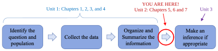

Figure 7.23: The process of statistics.
Recall from chapter 1 that a parameter is a measure of a population while a statistic is a measure taken from a sample.
Definition 1
Parameter – A number that is calculated from population data. This is the true value for the population and does not vary.
Statistic – A number calculated from sample data. This is more easily obtainable than a population parameter but varies with each sample. It is used to estimate the true value of the population parameter.
Table 1 contains the statistics we commonly use and their corresponding parameters.
Table 1: Common Statistics and Parameters | ||
|---|---|---|
Measurement | Statistic (from a sample) | Parameter (from the population) |
Mean | (x-bar) | (mu) |
Standard Deviation | s | (sigma) |
Proportion of successes in n trials of a binomial experiment. | (p-hat) | p |
It makes sense that we would use sample data to compute to approximate the mean , if we didn’t know it. But every sample will be slightly different! Different samples will have different sample means and could lead to different results. We need to know how likely it is that our samples are dependable, and how likely they are to mislead us. To do that, we will consider at the distribution of all possible sample means.
Definition 2
A Sampling Distribution is a probability distribution of a sample statistic (like ) that is based on all possible simple random samples of size n taken from the same population. The population the samples are taken from is often referred to as the “parent” population.

Important Point!
We will use sample data and the associated probability of the sample results to make two types of inference.
•Sample data can be used to either support or reject an idea. We will study this process in chapter 8.
•Sample data can be used to make an estimate of a population parameter. We will study this process in chapter 9.
The Distribution of the Sample Mean
The first sampling distribution we will investigate is the distribution of the sample mean, . That may sound intimidating, but it is just looking at possible sample averages for groups and finding how probable some averages are to occur in the sample. When you take the average of a group, you are calculating one possible sample mean.
Example 1: Computing Sample Means
For a demonstration, a nutty professor (me!) decided to roll 10 dice and compute the sample mean for the numbers on the faces. Each roll of 10 dice is considered a sample, and the average of the numbers on the showing faces is the sample mean.
The first sample result was {2, 2, 3, 3, 3, 3, 4, 4, 5, 5}.
The second sample result was {1, 1, 1, 2, 3, 5, 6, 6, 6, 6}.
The third sample result was {1, 2, 2, 3, 4, 4, 4, 5, 5, 6}.
Find the sample mean for each of the first three samples and compare them.
Solution:The first sample consisted of dice showing {2, 2, 3, 3, 3, 3, 5, 5, 6, 6}. The sample mean for the first sample is
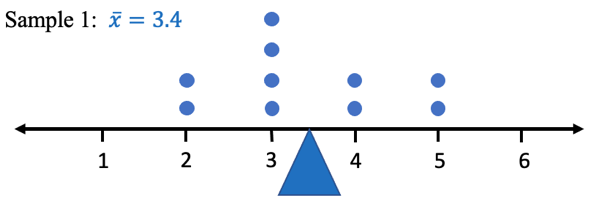
The dot plot of the sample shows the mean at the blue triangle, right in the middle of the data, as it should be.
The second sample consisted of {1, 1, 1, 2, 3, 5, 6, 6, 6, 6}. The sample mean for the second sample is then
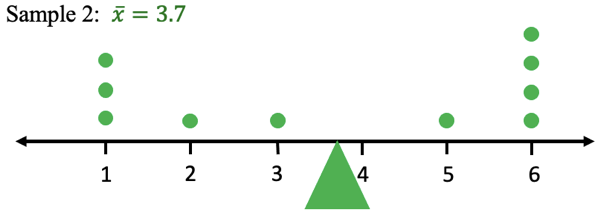
Again, the mean for the sample is represented by the triangle, this time green, which is in the center of the values in the sample.
The third sample consisted of {1, 2, 2, 3, 4, 4, 4, 5, 5, 6}. The sample mean for the third sample is
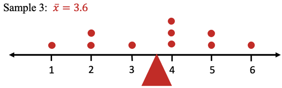
The red triangle represents the mean for the third sample.
Comparing the samples and the means, we notice that even though the samples vary, the sample means are all close together, between 3.4 and 3.7. This is an example of sample means tending to “clump” together around the mean of the parent distribution. As we will see, the theoretical mean roll of a six-sided die should be 3.5, and here the sample means are all very close to it! See figure 7.24 for the separated samples on the left, and the combined samples and sample means on the right.
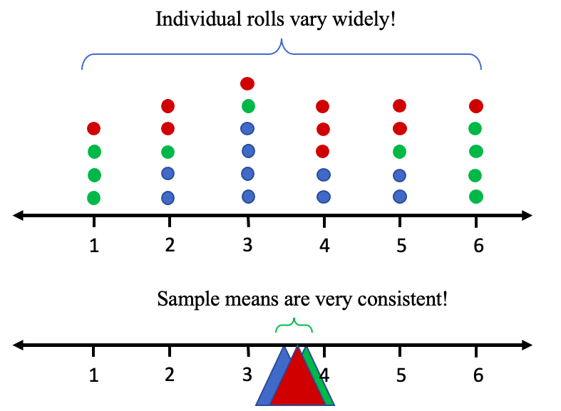
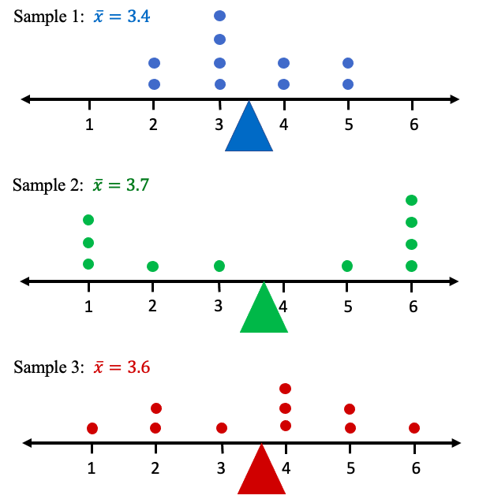
Figure 7.24: Sample means of the three samples of 10 dice rolls.
The professor rolled the 10 dice a total of 100 times and collected the data in Table 2. It consists of the number of ones, twos, threes, fours, fives, and sixes that occurred randomly in each of the rolls of 10 dice, and the mean for each of the 100 samples. You can access the data here: Dice Data (opens in a new tab).
Table 2: Samples of 10 Six-sided Dice Rolls and the Sample Mean Roll | |||||||||||||||
|---|---|---|---|---|---|---|---|---|---|---|---|---|---|---|---|
Sample Number | Ones | Twos | Threes | Fours | Fives | Sixes | Sample Mean | Sample Number | Ones | Twos | Threes | Fours | Fives | Sixes | Sample Mean |
1 | 0 | 2 | 4 | 2 | 2 | 0 | 3.4 | 51 | 1 | 1 | 1 | 3 | 1 | 3 | 4.1 |
2 | 3 | 1 | 1 | 0 | 1 | 4 | 3.7 | 52 | 2 | 1 | 2 | 2 | 2 | 1 | 3.4 |
3 | 1 | 2 | 1 | 3 | 2 | 1 | 3.6 | 53 | 3 | 1 | 1 | 2 | 2 | 1 | 3.2 |
4 | 2 | 1 | 0 | 4 | 3 | 0 | 3.5 | 54 | 0 | 1 | 3 | 2 | 1 | 3 | 4.2 |
5 | 1 | 2 | 2 | 1 | 2 | 2 | 3.7 | 55 | 2 | 2 | 1 | 1 | 3 | 1 | 3.4 |
6 | 2 | 2 | 3 | 1 | 1 | 1 | 3 | 56 | 1 | 2 | 3 | 2 | 1 | 1 | 3.3 |
7 | 1 | 1 | 2 | 0 | 2 | 4 | 4.3 | 57 | 5 | 0 | 4 | 1 | 0 | 0 | 2.1 |
8 | 4 | 2 | 1 | 2 | 0 | 1 | 2.5 | 58 | 2 | 0 | 5 | 1 | 1 | 1 | 3.2 |
9 | 0 | 3 | 2 | 1 | 4 | 0 | 3.6 | 59 | 0 | 2 | 0 | 2 | 0 | 6 | 4.8 |
10 | 0 | 2 | 2 | 4 | 1 | 1 | 3.7 | 60 | 1 | 4 | 2 | 1 | 1 | 1 | 3 |
11 | 3 | 1 | 1 | 2 | 1 | 2 | 3.3 | 61 | 2 | 1 | 0 | 1 | 1 | 5 | 4.3 |
12 | 3 | 3 | 2 | 1 | 0 | 1 | 2.5 | 62 | 3 | 1 | 2 | 3 | 0 | 1 | 2.9 |
13 | 1 | 3 | 0 | 3 | 1 | 2 | 3.6 | 63 | 2 | 3 | 0 | 1 | 2 | 2 | 3.4 |
14 | 2 | 1 | 2 | 1 | 2 | 2 | 3.6 | 64 | 2 | 3 | 3 | 0 | 0 | 2 | 2.9 |
15 | 0 | 2 | 4 | 0 | 1 | 3 | 3.9 | 65 | 1 | 1 | 1 | 4 | 3 | 0 | 3.7 |
16 | 2 | 1 | 2 | 1 | 2 | 2 | 3.6 | 66 | 2 | 0 | 1 | 2 | 4 | 1 | 3.9 |
17 | 1 | 1 | 1 | 1 | 3 | 3 | 4.3 | 67 | 0 | 4 | 2 | 2 | 2 | 0 | 3.2 |
18 | 1 | 0 | 2 | 4 | 2 | 1 | 3.9 | 68 | 2 | 1 | 3 | 1 | 1 | 2 | 3.4 |
19 | 3 | 2 | 1 | 1 | 1 | 2 | 3.1 | 69 | 0 | 1 | 4 | 2 | 1 | 2 | 3.9 |
20 | 1 | 1 | 4 | 0 | 1 | 3 | 3.8 | 70 | 1 | 5 | 0 | 1 | 1 | 2 | 3.2 |
21 | 1 | 1 | 2 | 5 | 0 | 1 | 3.5 | 71 | 1 | 2 | 2 | 1 | 1 | 3 | 3.8 |
22 | 0 | 3 | 0 | 1 | 4 | 2 | 4.2 | 72 | 2 | 3 | 1 | 1 | 3 | 0 | 3 |
23 | 1 | 3 | 2 | 0 | 1 | 3 | 3.6 | 73 | 1 | 1 | 1 | 4 | 3 | 0 | 3.7 |
24 | 2 | 3 | 3 | 0 | 1 | 1 | 2.8 | 74 | 2 | 3 | 0 | 1 | 1 | 3 | 3.5 |
25 | 1 | 1 | 1 | 3 | 2 | 2 | 4 | 75 | 1 | 1 | 1 | 5 | 1 | 1 | 3.7 |
26 | 5 | 0 | 2 | 1 | 1 | 1 | 2.6 | 76 | 2 | 3 | 2 | 2 | 0 | 1 | 2.8 |
27 | 4 | 1 | 1 | 1 | 2 | 1 | 2.9 | 77 | 1 | 0 | 2 | 5 | 1 | 1 | 3.8 |
28 | 1 | 1 | 2 | 4 | 2 | 0 | 3.5 | 78 | 3 | 2 | 2 | 1 | 0 | 2 | 2.9 |
29 | 0 | 1 | 3 | 3 | 1 | 2 | 4 | 79 | 3 | 2 | 0 | 2 | 2 | 1 | 3.1 |
30 | 1 | 4 | 2 | 0 | 2 | 1 | 3.1 | 80 | 3 | 3 | 1 | 1 | 1 | 1 | 2.7 |
31 | 3 | 0 | 2 | 2 | 1 | 2 | 3.4 | 81 | 1 | 2 | 1 | 2 | 3 | 1 | 3.7 |
32 | 1 | 1 | 1 | 3 | 1 | 3 | 4.1 | 82 | 5 | 0 | 1 | 0 | 3 | 1 | 2.9 |
33 | 1 | 0 | 2 | 2 | 4 | 1 | 4.1 | 83 | 1 | 2 | 3 | 0 | 3 | 1 | 3.5 |
34 | 2 | 0 | 0 | 3 | 4 | 1 | 4 | 84 | 1 | 2 | 2 | 1 | 3 | 1 | 3.6 |
35 | 1 | 5 | 1 | 1 | 2 | 0 | 2.8 | 85 | 0 | 1 | 2 | 3 | 3 | 1 | 4.1 |
36 | 1 | 1 | 0 | 4 | 2 | 2 | 4.1 | 86 | 3 | 4 | 0 | 1 | 1 | 1 | 2.6 |
37 | 1 | 2 | 2 | 0 | 2 | 3 | 3.9 | 87 | 3 | 0 | 1 | 4 | 1 | 1 | 3.3 |
38 | 2 | 1 | 2 | 1 | 0 | 4 | 3.8 | 88 | 1 | 3 | 3 | 0 | 2 | 1 | 3.2 |
39 | 0 | 2 | 1 | 3 | 3 | 1 | 4 | 89 | 3 | 0 | 1 | 3 | 0 | 3 | 3.6 |
40 | 3 | 0 | 2 | 1 | 3 | 1 | 3.4 | 90 | 3 | 3 | 1 | 1 | 2 | 0 | 2.6 |
41 | 1 | 1 | 2 | 3 | 2 | 1 | 3.7 | 91 | 3 | 1 | 2 | 2 | 1 | 1 | 3 |
42 | 1 | 2 | 2 | 2 | 2 | 1 | 3.5 | 92 | 3 | 3 | 0 | 1 | 2 | 1 | 2.9 |
43 | 2 | 1 | 3 | 1 | 2 | 1 | 3.3 | 93 | 0 | 0 | 1 | 5 | 4 | 0 | 4.3 |
44 | 3 | 2 | 1 | 2 | 2 | 0 | 2.8 | 94 | 4 | 3 | 2 | 1 | 0 | 0 | 2 |
45 | 3 | 0 | 1 | 1 | 2 | 3 | 3.8 | 95 | 2 | 0 | 3 | 2 | 1 | 2 | 3.6 |
46 | 2 | 3 | 0 | 3 | 0 | 2 | 3.2 | 96 | 1 | 1 | 1 | 1 | 2 | 4 | 4.4 |
47 | 1 | 4 | 2 | 2 | 0 | 1 | 2.9 | 97 | 3 | 1 | 3 | 0 | 0 | 3 | 3.2 |
48 | 1 | 2 | 2 | 1 | 2 | 2 | 3.7 | 98 | 2 | 0 | 4 | 3 | 0 | 1 | 3.2 |
49 | 0 | 2 | 4 | 2 | 0 | 2 | 3.6 | 99 | 1 | 2 | 2 | 1 | 2 | 2 | 3.7 |
50 | 0 | 3 | 2 | 1 | 1 | 3 | 3.9 | 100 | 1 | 4 | 1 | 0 | 3 | 1 | 3.3 |
Now, when you roll dice, the probability of getting any number is the same, 1/6. That makes the parent distribution a uniform distribution. See figure 7.25.
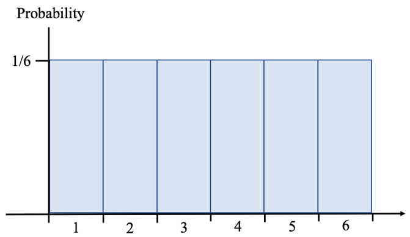
Figure 7.25: Uniform distribution for rolling a six-sided die.
In total, there were 1000 dice rolls (100 samples of 10 rolls each). If we create the relative frequency histogram for the different outcomes for all the rolls, it looks like figure 7.26. Notice that this appears to be a uniform distribution or is at least close. Figure 7.25 is the theoretical distribution and figure 7.26 approximates it using collected data. The main point is to note that it is not bell-shaped.
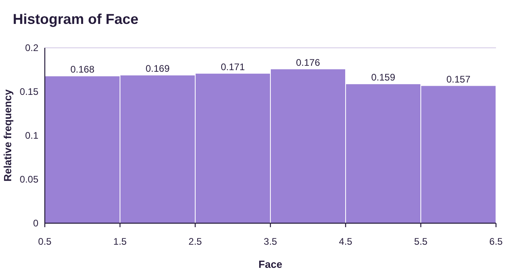
Figure 7.26: 1,000 dice rolls and relative frequency.
Next, we make a histogram for the 100 sample means from Table 2. It is shown in figure 7.27.
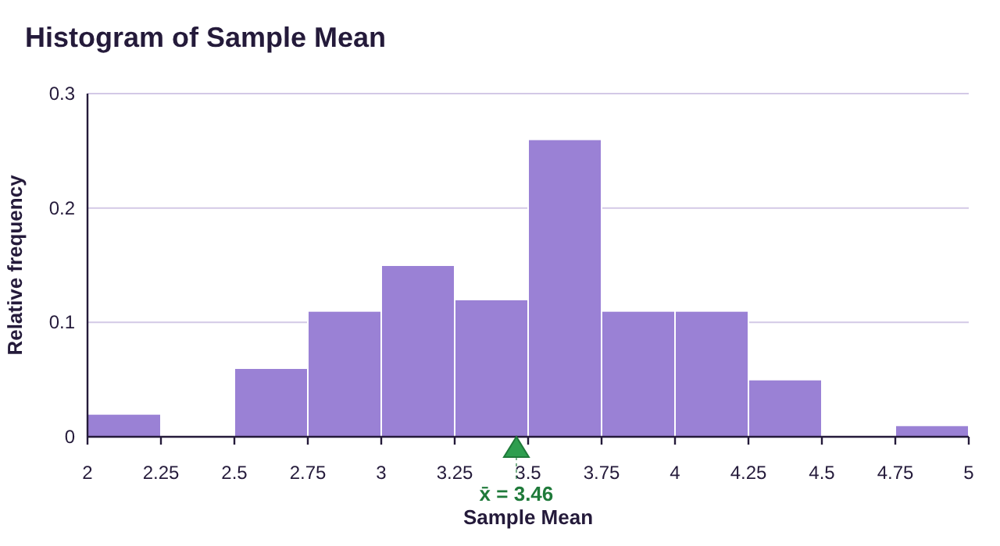
Figure 7.27: The sample means from 100 samples.
You might be amazed to see that the distribution of the sample means looks like a normal distribution, even though the original data was not normal! Because means tend toward a center, like we saw in example 1, they tend to group together around the mean of the original distribution. Extremely low sample means occur rarely because they require all the data in the sample to be low. Similarly, extremely high sample means occur rarely because all the data in the sample would need to be very high. Since the samples are random, most have some low values and some high values that cancel each other out. The result is that most often, the sample means drift to the center. That is why the histogram in figure 7.27 appears to be bell-shaped.
What is the main takeaway? Regardless of the type of distribution you begin with, taking sample means from that population creates a bell-shaped distribution! As the size of the samples n gets larger, the closer the distribution gets to being exactly normal. That is partly why the normal distribution is so important. Under the right circumstances, the distribution of sample means is a normal distribution, and we use the normal distribution and the methods of section 7.2 to find probability and percentiles for questions about sample means. But what are the “right circumstances?” They are spelled out in the central limit theorem.
Central Limit Theorem (CLT)
Assume that X is a random variable with mean and standard deviation Simple random samples of size n are taken from the population. Then the distribution of sample means has the following characteristics.
1.Center- The mean is
2.Variation- The standard deviation is
3.Shape- The distribution is normal if either
•The original distribution X is normal, or
•If the sample size .
The larger n is, the closer to normal the distribution for gets. That is what is meant by the word “limit” in the title of the theorem. As n increases (the limit), the sample means move closer to the center (the “Central” part of the title).
Now, this can be confusing. We now have two related but different probability distributions that we are discussing. The original “parent distribution” and the new “distribution of sample means”. It is helpful to keep the two distributions organized. The summary of them is shown below in Table 3.
Table 3: Summary of the Central Limit Theorem | ||
|---|---|---|
CLT Summary | Parent (original) Distribution (this is usually what we are given) | New Distribution of Sample Mean |
Sample size n | ||
Variable | Given in the problem | (The sample mean formula) |
Center | Given in the problem | (The mean is the same) |
Dispersion | Given in the problem | (The std. dev. is smaller) |
Shape | Normal? Yes/No/Unknown | is normal if either •The original distribution for X is normal, OR • |
Use | Probability is found for ONE randomly selected object | Probability is found for a MEAN of a random sample of objects |
Example | Find the probability that one randomly selected cookie weighs more than 7 ounces. | Find the probability that a sample of 25 cookies has an average weight that is more than 7 ounces. |
Example 2: Comparing the Parent and Sampling Distribution of the Mean
Continuing the discussion of the nutty dice-throwing professor, recall that he rolled 10 dice 100 times and counted the number of ones, twos, threes, fours, fives, and sixes in each roll. Each roll of 10 dice is considered a sample. All the results can be found in Table 2. Describe the parent distribution and the distribution of sample means in terms of variable, center, variation, and shape. Compare to the results shown in figures 7.26 and 7.27. You can access the data here: Dice Data (opens in a new tab)
Solution:The parent distribution consists of rolls of a six-sided die, which we investigated in example 7 of section 6.1. In that example we identified the distribution as uniform and calculated the mean and standard deviation. See Table 4 and Figure 7.28 below.
Table 4: Results of a Six-sided Die Roll | |
|---|---|
X = face of die | Probability |
1 | 1/6 |
2 | 1/6 |
3 | 1/6 |
4 | 1/6 |
5 | 1/6 |
6 | 1/6 |
1 | |
Figure 7.28: Uniform Probability Distribution for Dice Rolls.
Reviewing those results, we found the mean number showing on a six sided die is
and the standard deviation of the number showing on a six-sided die is
So, the parent distribution has the following characteristics, noted in the first column of Table 5.
Table 5: Two Related Distributions | ||
|---|---|---|
Summary | Parent (original) Distribution | New Distribution of Sample Mean n = ______? |
Variable | The roll of a six sided die |
|
1. Center | (the average roll is 3.5) |
|
2. Dispersion |
| |
3. Shape | Normal? Yes/No/Unknown The distribution is uniform, not normal | Is normal? •Is the original distribution for X normal? •Is ? |
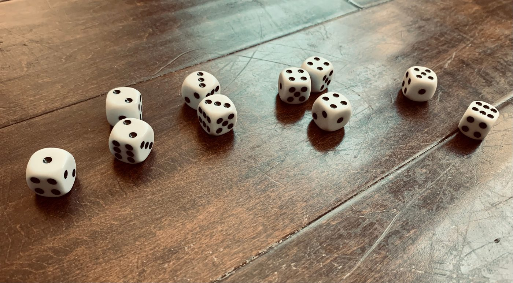
Next, we consider the new distribution of sample means.
The variable is now the mean of the samples, so we use the notation to for the variable.
Theoretically, the mean of the sample means is the same as the mean of the parent distribution, so . If you check figure 7.27, the mean of the sample means for the 100 samples is marked as 3.46, which is very close to the theoretical mean .
 Tip!
Tip!Why is the mean of the distribution of sample means the same as the original mean? Think of it this way: The average of a bunch of averages should be very average, right? Well, the average of all possible averages is exactly the average. (The word average here refers to the mean.)
The standard deviation for the distribution of sample means is different from the parent distribution and must be calculated. The original standard deviation is approximately 1.708, and the sample size is n = 10, since each sample consisted of 10 rolled dice. The formula gives us
If you use Descriptive Statistics → Basic Statistics on the 100 sample means, the standard deviation of the distribution of 100 sample means is 0.5205. This is very close and differs from our theoretical calculation due to variation between samples. If we were to roll the 10 dice thousands of times, the mean and standard deviation would be even closer to their theoretical values.
The shape of the distribution of sample means will be normal if either the original distribution was normal, or if . Sadly, the parent distribution is uniform, not normal, and n = 10 which is smaller than 30. So, even though the histogram shown in figure 7.27 looks close to normal, it isn’t exactly normal. That means we cannot use a normal calculator to find probability for this variable.
Table 5: Two Related Distributions | ||
|---|---|---|
Summary | Parent (original) Distribution | New Distribution of Sample Mean n = 10 |
Variable | The roll of a six sided die | = the mean of 10 rolled dice |
1. Center | (the average roll is 3.5) | (the mean is the same!) |
2. Dispersion |
| |
3. Shape | Normal? Yes/No/Unknown The distribution is uniform, not normal | Is normal? •Is the original distribution for X normal? •Is ? No, is NOT normal |
We have now filled in the right column of Table 5 and described both the parent distribution and the new distribution of sample means.
Tip!Why is the standard deviation of the distribution of sample means smaller than the original standard deviation? Think of it this way: It is much easier for one observation to be far from the mean than it is for the average of a group. For example, you could randomly select an individual who is over 6’ 6” tall. It is much less likely to randomly select a group of 10 individuals whose average height is over 6’ 6” tall. Individual sample data is more widely dispersed (larger standard deviation) while the sample means cluster around the mean (less variation and hence smaller standard deviation). Take another look at figure 7.24, reproduced here. The first three samples of 10 dice rolls varied widely, but the sample means did not. As a result, the standard deviation for the distribution of sample means is smaller.
Figure 7.24: Sample means of the three samples of 10 dice rolls.
Example 3: Describing the Distribution of the Sample Mean
The mean SAT Math score for students who took the SAT in 2020 was 528 and the standard deviation was 120 (from the College Board’s 2021 total group report). Assume that SAT Math scores follow a normal distribution. Random samples of size n = 25 are taken from the population.
a)Describe the distribution of sample means.
b)Find the probability that a random sample of 25 students has a mean score higher than 550.
c)Find the probability that one student selected at random has a score higher than 550.
d)Compare and contrast parts (b) and (c).
Solution:a)To describe the distribution of sample means, we will first describe the parent distribution. It is given that X = the SAT score for students who took the exam in 2020. The mean of the distribution was 528 and the standard deviation was 120. We are instructed to assume the SAT Math scores are normal. This information allows us to fill in the first column of Table 6.
The variable for the parent distribution is X = the score of one student. The variable for the new distributions is = the mean score of 25 randomly selected students.
The mean of the distribution of sample means is the same as the old mean, so
The standard deviation of the distribution of sample means is
The shape of the distribution will be normal if either the original distribution is normal, or if the sample size n is greater than or equal to 30. In this example, n is 25 which is not greater than or equal to 30, but it doesn’t matter because the original distribution is already normal. So, has a normal distribution. This information is summarized in the second column of Table 6.
Table 6: Two Related Distributions | ||
|---|---|---|
Summary | Parent (original) Distribution | New Distribution of Sample Mean n = 25 |
Variable | Score of a student on SAT Math | = the mean score of 25 students on SAT Math |
1. Center | (the average score) | (the same!) |
2. Dispersion |
| |
3. Shape | Normal? Yes/No/Unknown Yes, it is assumed to be normal | Is normal? •Is the original distribution for X normal? •Is ? Yes! is normal! |
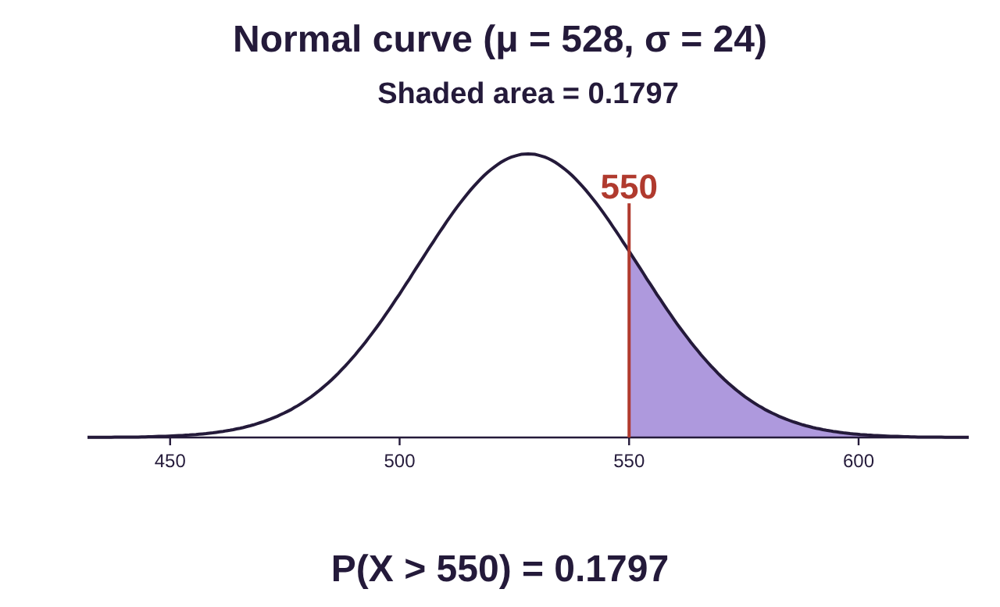
b)Because follows a normal distribution, we can use the normal probability calculator to find the probability that a random sample of 25 students has a mean score higher than 550. The probability notation for what we want is .
We open STATBELT Utility, select Calculators → Normal Calculator, then type in the mean and standard deviation . Make sure you use the new standard deviation for this!
Choose “P(X > a)” and type 550 for the value a. The result is .
Approximately 18% of random samples of 25 students will have mean scores that are higher than 550.
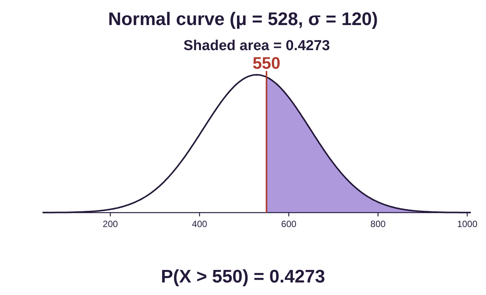
c)This question looks similar, but it does not ask about the mean of a sample. It asks us to find the probability that ONE student scores higher than 550. That means we use the original, parent, distribution with the original standard deviation 120. We want to find . Other than the standard deviation, the rest of the process is identical to part (b).
, so, about 42.7% of students will score higher than 550 on the SAT Math exam.
d)Part (b) asked about the mean SAT math score of a group of 25 students. Because it was about sample means, we used the central limit theorem to find the mean, standard deviation, and shape of the distribution of sample means. For part (c), the question was about ONE student score, so we did not use the central limit theorem. We used the mean and standard deviation from the parent distribution. Numerically, there is a much greater chance that one student scores above 550 on the SAT math exam than for the average of a group to score that high. Of individuals, 42.7% score above 550, while of groups of 25, only 18% score that high.
Tip!This can feel intimidating! But after 10 pages of discussion, the main takeaways should be:
1.The distribution of sample means is bell-shaped and often normal.
2.If normal, we can use the normal calculator to find probability for sample means.
3.The mean of the new distribution of sample means is the same, but the standard deviation is different. We must compute it using the formula .
4.Anytime you see “samples of size n = ___ are taken” and you are asked about the “sample mean”, or “group average”, you need to use the central limit theorem and create the distribution of sample means.
Example 4: Central Limit Theorem Application
Lifespans, or replacement times, for cell phones in the U.S. are normally distributed with a mean of 2.8 years and standard deviation of 1.1 years. Random samples of 50 consumers are collected.
a)Find the probability that a sample of 50 cell phones has an average lifespan greater than 3 years.
b)Find the probability that a sample of 50 cell phones has a mean lifespan between 2.5 and 3 years.
c)Many purchase plans for new phones spread payments over 30 months, or 2.5 years. Find the probability that a sample of 50 cell phones has a mean lifespan less than 2.5 years. Would this be unusual?
Solution:First, note that we are dealing with samples of size n = 50 and the probability of sample mean lifespan, or average replacement times of cell phones. Those clues tell us that we need to use the central limit theorem! The parent distribution is X = cell phone replacement time. The mean is 2.8, and standard deviation is 1.1. X is normally distributed.
The distribution of sample means, , of samples of size n = 50 has the same mean, The standard deviation is calculated as
Since the original distribution is normal, so is the distribution for . We could also say that since , then has a normal distribution. Either one is enough! You don’t need both! Either way, we can now completely describe the distribution for :
• has mean
• has standard deviation
• is normally distributed
Photo by Jonas Lee (opens in a new tab) on Unsplash (opens in a new tab)
Now we are ready to use the normal probability calculator to find the probability relating to the means of samples of size 50 taken randomly from the population.
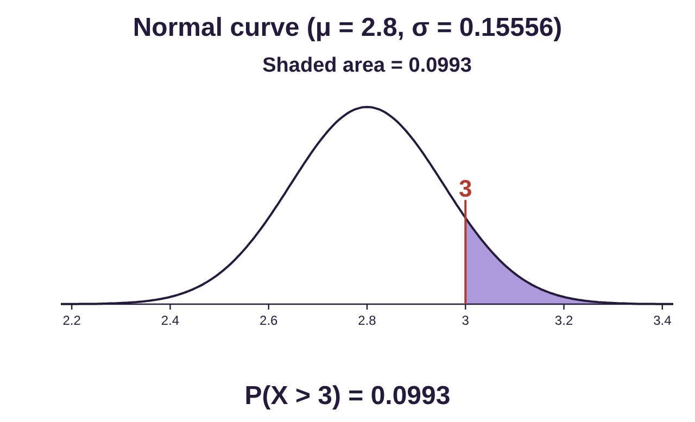
a)Here we are asked to find the probability that a sample of 50 phones has a mean lifespan greater than 3 years. Symbolically, that is .
Open STATBELT Utility and follow Calculators → Normal Calculator. Input the mean and standard deviation . Choose “P(X > a)” and type 3 for the value a. The result is .
Approximately 9.9% of samples of 50 phones will have a mean replacement time of at least 3 years.
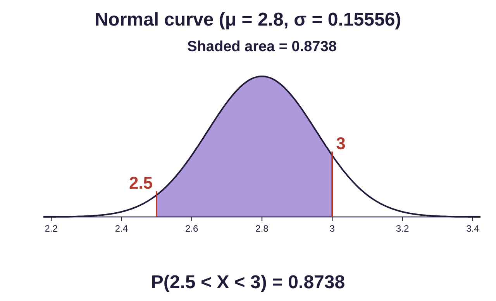
b)Here we are asked to find the probability that a sample of 50 phones has a mean lifespan between 2.5 and 3 years. Symbolically, we want .
Choose “P(a < X < b)” and type 2.5 for the lower value a and 3 for the upper value b. The result is .
Approximately 87.4% of samples of 50 phones will have a mean replacement time between 2.5 and 3 years.
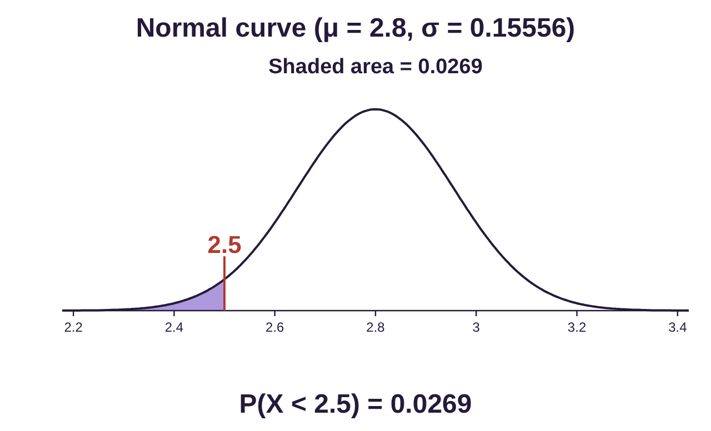
c)Here we are asked to find the probability that a sample of 50 phones has a mean lifespan less than 30 months, or 2.5 years. Symbolically, that is .
Choose “P(X < a)” and type 2.5 for the value a. The result is .
Approximately 2.7% of samples of 50 phones will have a mean replacement time less than 2.5 years. It would be unusual for a sample of 50 cell phones to have a mean replacement time that was less than 30 months.
Example 5: Finding Probability for a Non-Standard Normal Distribution
Dark chocolate bars are advertised by the manufacturer to weigh 8 ounces. The mean weight of the bars is 8.2 ounces with a standard deviation of 0.12 ounces. Chocolate bars are packaged in boxes of 48 bars. For quality control purposes, each day a random box is selected, and the 48 bars are weighed. If the sample mean weight is less than 8.1 ounces, the sample is rejected and the machinery in the production line is checked. What is the probability a random sample will be rejected?
Photo by Tetiana Bykovets (opens in a new tab) on Unsplash (opens in a new tab)
Solution:The parent distribution for X = weight of a dark chocolate bar is given with mean ounces and standard deviation ounces. The shape of the distribution is not stated.
The distribution of sample means, , of samples of size n = 48 has the same mean, The standard deviation is
We don’t know whether the original distribution is normally distributed, but , so is automatically normally distributed. The distribution for = the mean weight of 48 dark chocolate bars has the following description:
• has mean
• has standard deviation
• is normally distributed
Now we are ready to use the normal probability calculator to find the probability that a random sample of 48 bars will be rejected.
The sample will be rejected if the mean weight of the sample is less than 8.1 ounces, so we need to find Using the STATBELT Normal Calculator (Calculators → Normal Calculator), we type 8.2 for the mean and 0.01732 for the standard deviation, choose “P(X < a)” and type 8.1 for the value a.
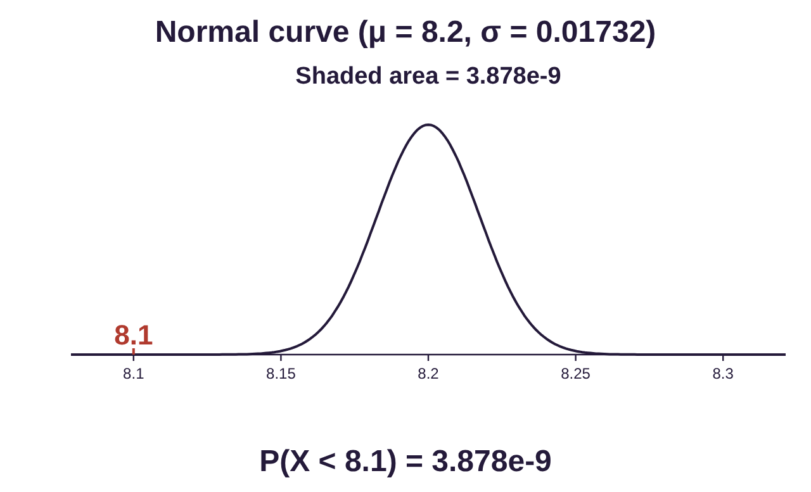
Something curious happens when we look at the result. The result is given as . This is the way many calculators, and in this case STATBELT, give numbers in scientific notation. The negative exponent tells us to multiple the number by 10 raised to the negative 9th power. So,
As you can see, if the machinery is working properly, the mean weight of the bars will drop lower than 8.1 ounces approximately only 4 times out of a billion, or once in every 250 million chances. So, if the sample fails the test, there is good reason to suspect something is wrong with the machinery.
Note: This last example is hinting at inference. The manufacturers assume that the machinery works properly unless there is evidence to conclude otherwise. In this case, very light samples occur randomly only once in every 250 million chances. So, if they get one, they conclude the machinery is to blame, not random chance. They are using sample data to make an inference, in this case that the machinery works properly or does not work properly.
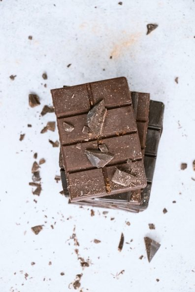
Photo by Tetiana Bykovets (opens in a new tab) on Unsplash (opens in a new tab)